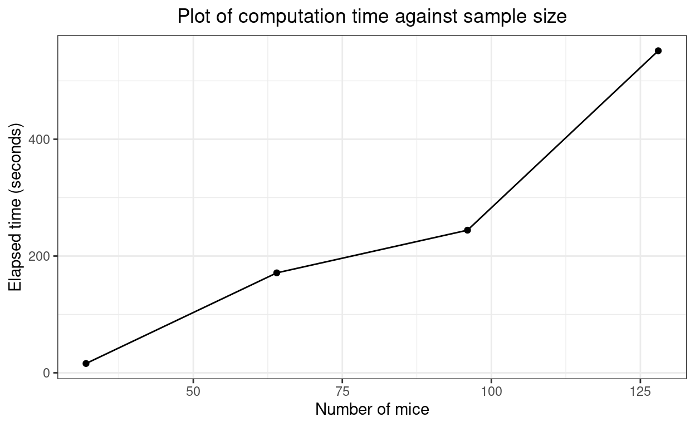

This describes the ExactCIdiff package, unpacks the arguments to the functions, looks at timings and notes an oddity, a typo I think, in the original paper about the package.
Warning: this is pretty geeky statistical stuff
Warning2: the package is no longer on CRAN ## Installing package from source
Update added 26.vi.22
The ExactCIdiff package has dropped off CRAN because the authors/maintainers aren’t responding to the CRAN team and a URL in the package is not openning for CRAN. This doesn’t affect the code in the package.
You can download the source package from https://cran.r-project.org/src/contrib/Archive/ExactCIdiff/. It’s the last version, v1.3 you want which is https://cran.r-project.org/src/contrib/Archive/ExactCIdiff/ExactCIdiff_1.3.tar.gz
### you can download it before launching R:
### install.packages("~/Downloads/ExactCIdiff_1.3.tar.gz", repos = NULL, type = "source")
### replace "~/Downloads/" with the directory into which you downloaded it of course!
### or, as I should have remembered, you can omit downloading the package beforehand and just grab it withing the
### install.packages() call:
install.packages("https://cran.r-project.org/src/contrib/Archive/ExactCIdiff/ExactCIdiff_1.3.tar.gz", repos = NULL, type = "source")
That’s that solved!
I came on this as Clara and I need to look at the differences in proportions between two arms of our “elephant” study (we call it that because it’s BIG!) I knew that I wasn’t confident about the best way to get 95% confidence intervals (CIs) for a difference between two proportions. I have been using Hmisc::binconf() for certainly over ten years for CIs around a single proportion but knew this was a bit different. A bit of searching led to the ExactCIdiff package and to the paper about it: Shan, G., & Wang, W. (2013). ExactCIdiff: An R Package for Computing Exact Confidence Intervals for the Difference of Two Proportions. The R Journal, 5(2), 62. https://doi.org/10.32614/RJ-2013-026.
I can’t follow the maths of the method but I do follow the evidence that it does better in terms of coverage probability (the actual probability that it will include the population value) than other methods. It’s a clean package and a nice paper and I say it’s a clean package as it appears to do just two things and the two things it sets out to do, and to do them well.
The two things are to give you a CI around an observed difference in proportions for a paired sample (e.g. proportion above a cut-off at baseline and after therapy) or for the same but for unconnected samples (what we have: students versus non-student people of the same age group).
I will start with the latter.
I’ll quote from their paper:
The second data set is from a two-arm randomized clinical trial for testing the effect of tobacco smoking on mice (Essenberg, 1952). In the treatment (smoking) group, the number of mice is n 1 = 23, and the number of mice which developed tumor is x = 21; in the control group, n 2 = 32 and y = 19.
Ugh, not my world but it’s their paper. So here’s their data, rows as smoking/non-smoking groups and columns as whether the poor things developed tumours.
smoking 0 1 Total
0 13 19 32
1 2 21 23
Total 15 40 55And with percentages.
tibPoorMice %>%
tabyl(smoking, tumour) %>%
adorn_totals(where = c("row", "col")) %>%
adorn_percentages(denominator = "row") %>%
adorn_pct_formatting(digits = 1) smoking 0 1 Total
0 40.6% 59.4% 100.0%
1 8.7% 91.3% 100.0%
Total 27.3% 72.7% 100.0%Pretty clear that’s going to be statistically significant … and it is.
tibPoorMice %>%
tabyl(smoking, tumour) %>%
chisq.test()
Pearson's Chi-squared test with Yates' continuity correction
data: .
X-squared = 5.3625, df = 1, p-value = 0.02057But what we want is the confidence interval. Here are the separate intervals.
tibPoorMice %>%
group_by(smoking) %>%
### bit back to square one given I stared with the raw numbers but
### this is how it would be with real data
summarise(n = n(),
nTumour = sum(tumour == 1),
### this is a bit messy, Hmisc::binconf returns a matrix
### but I just want the first row, hence the "[1,]"
### and of course I need the list as that's how dplyr
### has to be told that what it's getting is a list or
### a vector (as here)
binconf = list(Hmisc::binconf(nTumour, n)[1,])) %>%
### OK, unnest that
unnest_wider(binconf) %>%
### recode smoking to a factor
mutate(smoking = ordered(smoking,
levels = 0:1,
labels = c("Smoked mice",
"Lucky ones"))) -> tmpTib
### print that
tmpTib %>%
### do some rounding across the three values PointEst to Upper
mutate(across(PointEst:Upper, round, 2)) %>%
pander(justify = "rrrrrr")| smoking | n | nTumour | PointEst | Lower | Upper |
|---|---|---|---|---|---|
| Smoked mice | 32 | 19 | 0.59 | 0.42 | 0.74 |
| Lucky ones | 23 | 21 | 0.91 | 0.73 | 0.98 |
And here as a plot as I am such a believer in offering both tabulated and plotted data where possible as some people find tables easier to digest (more precision) and others find the plots easier (more, hm, visual impact!)
### get overall proportion for reference line
tibPoorMice %>%
summarise(nTumour = sum(tumour == 1),
n = n(),
prop = nTumour / n) %>%
select(prop) %>%
pull() -> tmpAllProp
ggplot(data = tmpTib,
aes(x = smoking, y = PointEst)) +
geom_point() +
geom_linerange(aes(ymin = Lower, ymax = Upper)) +
geom_hline(yintercept = tmpAllProp) +
scale_y_continuous(name = "Proportion", breaks = seq(0, 1, .1), limits = c(0,1)) +
xlab("Whether the poor mice were smoked or not!") +
ggtitle("95% confidence intervals for proportions")So now (finally) we come to ExactCIdiff! The function is BinomCI and the syntax is that you give the four numbers from the crosstabulation, as n1, n2, count1, count2, so here 23, 32, 21, 19:
BinomCI(23, 32, 21, 19, conf.level = ?, CItype = ?)
I’m going to take things in the order that the authors do in their paper, starting with:
uci <- BinomCI(23, 32, 21, 19, conf.level = 0.95, CItype = "Upper")$ExactCI so the one-sided upper 95% confidence limit.
Sys.time() -> time1
uci <- BinomCI(23, 32, 21, 19, conf.level = 0.95, CItype = "Upper")$ExactCI
Sys.time() -> time2
elapsedTimeSecs1 <- as.numeric(difftime(time2, time1, units = "secs"))
uci[1] -1.00000 0.48595That’s a one-sided interval telling me that the upper 95% confidence limit for the difference is 0.48595: big. The computations are CPU intensive, that took 1 minutes on a fairly powerful laptop. I will generally want a two-sided interval and their next three calls to BinomCI demonstrate the relationship between the two one-sided 97.5% confidence limits and the two-sided CI. First the upper 97.5% limit.
[1] -1.00000 0.51259elapsedTimeSecs2 <- as.numeric(difftime(time2, time1, units = "secs"))So upper 97.5% limit 0.51259 (elapsed time 31.7 seconds).
Sys.time() -> time1
l975 <- BinomCI(23, 32, 21, 19, conf.level = 0.975, CItype = "Lower")$ExactCI
Sys.time() -> time2
elapsedTimeSecs3 <- as.numeric(difftime(time2, time1, units = "secs"))
l975[1] 0.09468 1.00000# [1] 0.09468 1.00000So lower 97.5% limit 0.09468 (elapsed time 6.8 seconds).
Sys.time() -> time1
ci95 <- BinomCI(23, 32, 21, 19)$ExactCI
Sys.time() -> time2
elapsedTimeSecs4 <- as.numeric(difftime(time2, time1, units = "secs"))
ci95[1] 0.09468 0.51259# [1] 0.09468 0.51259And it can be seen there that the two-sided 95% CI is from 0.09468 to 0.51259, i.e. from the lower 97.5% CL to the upper 97.5% CL. (Elapsed time 38.5 seconds).
Here again I’ll quote from the paper:
We illustrate the usage of the PairedCI() function to calculate the exact smallest lower one-sided confidence interval [LP , 1] for θP in (1) with the data from Karacan et al. (1976). In this study, 32 marijuana users are compared with 32 matched controls with respect to their sleeping difficulties, with n11 = 16, n12 = 9, n21 = 3, and n22 = 4. The second argument in the function is t = n11 + n22 = 20.
The “(1)” refers back to the first equation in the paper which I won’t copy in here as it would need some formatting and doesn’t really matter for our purposes.
# ```{r makeTable, results='asis'}
# tmpVec <- c("", "Success at t2", "Failure at t2", "",
# "Success at t1", "N11, p11", "N12, p12", "p1 = p11 + p12",
# "Failure at t1", "N21, p21", "N22, p22", "",
# "", "p2 = p11 + p21", "", "Total, p = 1")
tmpVec <- c("", "Success at t2", "Failure at t2", "",
"Success at t1", "N11, p11", "N12, p12", "",
"Failure at t1", "N21, p21", "N22, p22", "",
"", "", "", "Total, p = 1")
tmpMat <- matrix(tmpVec, ncol = 4)
# print(xtable::xtable(tmpMat, type = "html"))
# print(xtable::xtable(tmpMat, getOption("xtable.type", "html")))
# knitr::kable(tmpMat, "html")
tmpMat %>%
kbl() %>%
kable_styling(bootstrap_options = c("striped")) %>%
# kable_styling() %>%
row_spec(1, align = "c", bold = TRUE) %>%
row_spec(2:4, align = "c") %>%
column_spec(1, bold = TRUE, border_right = TRUE) %>%
column_spec(2, border_right = TRUE) %>%
column_spec(3, border_right = TRUE) | Success at t1 | Failure at t1 | ||
| Success at t2 | N11, p11 | N21, p21 | |
| Failure at t2 | N12, p12 | N22, p22 | |
| Total, p = 1 |
I do find this way of describing a contingency table pretty counterinuitive!
GRRrrrr!!! I continue to feel that table handling in R is almost its Achilles heel. I’ve just wasted the better part of an hour finding out a way to get that table in an even halfway, no quarterway, decent form. I think I first commented on this perhaps twenty years ago and the R team position has always been, I think, that nice tables are for packages to fix and so we have multiple packages that try to fix this, mostly incompatible and none of them working reliably in Rmarkdown and with all output formats from Rmarkdown. I think the R afficionados all love knocking up tables in LaTeX and I’m sure that’s fine if you are really familiar with LaTeX and I suspect that direct R to LaTeX is the most robust and general way to do things but many of us don’t know TeX/LaTeX and don’t really want to have to learn it. Aarghhhh! OK, flame over!
Back to the data here.
tmpVec2 <- c("", "Sleep OK, no smokes", "Sleep poor, no smokes", "",
"Sleep OK, smokes", "16", "9", "",
"Sleep poor, smokes", "3", "4", "",
"", "", "", "Total, p = 1")
tmpMat2 <- matrix(tmpVec2, ncol = 4)
# print(xtable::xtable(tmpMat, type = "html"))
# print(xtable::xtable(tmpMat, getOption("xtable.type", "html")))
# knitr::kable(tmpMat, "html")
tmpMat2 %>%
kbl() %>%
kable_styling(bootstrap_options = c("striped")) %>%
# kable_styling() %>%
row_spec(1, align = "c", bold = TRUE) %>%
row_spec(2:4, align = "c") %>%
column_spec(1, bold = TRUE, border_right = TRUE) %>%
column_spec(2, border_right = TRUE) %>%
column_spec(3, border_right = TRUE) | Sleep OK, smokes | Sleep poor, smokes | ||
| Sleep OK, no smokes | 16 | 3 | |
| Sleep poor, no smokes | 9 | 4 | |
| Total, p = 1 |
That means that the code is:
PairedCI(9, 20, 3, conf.level = 0.95)
because the syntax is
PairedCI(n12, t, n21, conf.level, CItype, precision, grid.one, grid.two)
where we can ignore grid.one and grid.two for now and leave them at their default values of 30 and 20 and precision is, as the help says:
Precision of the confidence interval, default is 0.00001 rounded to 5 decimals.
OK, so here we go with:
PairedCI(9, 20, 3, conf.level = 0.95)
Sys.time() -> time1
lciall <- PairedCI(9, 20, 3, conf.level = 0.95) # store relevant quantities
Sys.time() -> time2
elapsedTimeSecs5 <- as.numeric(difftime(time2, time1, units = "secs"))
lciall$conf.level
[1] 0.95
$CItype
[1] "Two.sided"
$estimate
[1] 0.1875
$ExactCI
[1] -0.03564 0.39521# $conf.level
# [1] 0.95
#
# $CItype
# [1] "Two.sided"
#
# $estimate
# [1] 0.1875
#
# $ExactCI
# [1] -0.03564 0.39521(Elapsed time 15.8 seconds.)
The odd thing here is that this is not what the authors show in the paper:
lciall # print lciall
$conf.level
[1] 0.95 # confidence level
$CItype
[1] "Lower" # lower one-sided interval
$estimate
[1] 0.1875 # the mle of p1 - p2
$ExactCI
[1] 0.00613 1.00000 # the lower one-sided 95% interval
lci <- lciall$ExactCI # extracting the lower one-sided 95% interval
lci # print lci
[1] 0.00613 1.00000 The use of marijuana helps sleeping because the interval [ 0.00613, 1 ] for θP is positive.
Which is clearly not what I just got. However, in the paper they go on:
The upper one-sided 95% interval and the two-sided 95% interval for θ~P~ are given below for illustration purpose.I think that’s a typo. I think what they are showing are the results of
PairedCI(9, 20, 3, conf.level = 0.95, CItype = "lower")
Let’s see:
Sys.time() -> time1
lciall <- PairedCI(9, 20, 3, conf.level = 0.95, CItype = "Lower") # store relevant quantities
Sys.time() -> time2
elapsedTimeSecs5 <- as.numeric(difftime(time2, time1, units = "secs"))
lciall$conf.level
[1] 0.95
$CItype
[1] "Lower"
$estimate
[1] 0.1875
$ExactCI
[1] 0.00613 1.00000Yes! (Elapsed time 3.5 seconds.)
They do go on to give us other things in the paper and that I think confirms that the above call was a typo.
So here is the upper 95% CL.
Sys.time() -> time1
uci <- PairedCI(9, 20, 3, conf.level = 0.95, CItype = "Upper")$ExactCI
Sys.time() -> time2
elapsedTimeSecs7 <- as.numeric(difftime(time2, time1, units = "secs"))
uci[1] -1.00000 0.36234# [1] -1.00000 0.36234(Elapsed time 12.5 seconds.)
The upper 97.5% CL.
Sys.time() -> time1
u975 <- PairedCI(9, 20, 3, conf.level = 0.975, CItype = "Upper")$ExactCI
Sys.time() -> time2
elapsedTimeSecs8 <- as.numeric(difftime(time2, time1, units = "secs"))
u975[1] -1.00000 0.39521# [1] -1.00000 0.39521(Elapsed time 12.2 seconds.)
The lower 97.5% CL.
Sys.time() -> time1
l975 <- PairedCI(9, 20, 3, conf.level = 0.975, CItype = "Lower")$ExactCI
Sys.time() -> time2
elapsedTimeSecs9 <- as.numeric(difftime(time2, time1, units = "secs"))
l975[1] -0.03564 1.00000# [1] -0.03564 1.00000(Elapsed time 3.4 seconds.)
And back to the two-sided 95% CI (and yes, I’m running it again just to be sure I get the same answer as last time!)
Sys.time() -> time1
ci95 <- PairedCI(9, 20, 3, conf.level = 0.95)$ExactCI
Sys.time() -> time2
elapsedTimeSecs10 <- as.numeric(difftime(time2, time1, units = "secs"))
ci95[1] -0.03564 0.39521# [1] -0.03564 0.39521(Elapsed time 15.6 seconds.)
Yup, the same again and fits with what they say in the paper:
[1] -0.03564 0.39521 # the two-sided 95% interval
# it is equal to the intersection of two one-sided intervalsClearly one issue here is that these are small total sample sizes in their two examples but the process is computationally expensive (though 40x faster than another approach with the same accuracy/coverage).
vecMultipliers <- 1:4 # check for sample sizes 1 to 8x the example above
vecTimesPaired <- rep(NA, length(vecMultipliers))
matCI95paired <- matrix(rep(NA, length(vecMultipliers) * 2), ncol = 2)
vecTimesPaired[1] <- elapsedTimeSecs10
matCI95paired[1, ] <- ci95
for (mult in vecMultipliers[-1]) {
Sys.time() -> time1
matCI95paired[mult, ] <- PairedCI(mult * 9, mult * 20, mult * 3, conf.level = 0.95)$ExactCI
Sys.time() -> time2
vecTimesPaired[mult] <- as.numeric(difftime(time2, time1, units = "secs"))
}Here are those CIs getting tighter as the numbers go up.
| nPairs | LCL | UCL |
|---|---|---|
| 32 | -0.03564 | 0.3952 |
| 64 | 0.03751 | 0.3396 |
| 96 | 0.06301 | 0.3067 |
| 128 | 0.07231 | 0.2906 |
ggplot(data = tibCI95paired,
aes(x = nPairs)) +
geom_linerange(aes(ymin = LCL, ymax = UCL)) +
geom_hline(yintercept = 0.1875) +
ylab("Difference in proportions") +
scale_x_continuous(name = "Number of pairs",
breaks = vecMultipliers * 32) +
ggtitle("Two sided 95% CI tightening with increasing sample size",
subtitle = "Horizontal reference line is observed difference in proportions")And here are the times (in seconds).
| nPairs | timeSecs |
|---|---|
| 32 | 15.63 |
| 64 | 167.3 |
| 96 | 243.8 |
| 128 | 550.7 |
Hm. That doesn’t look that far off linear which is not what I had expected.
ci95 <- BinomCI(23, 32, 21, 19)$ExactCI
vecTimesUnpaired <- rep(NA, length(vecMultipliers))
matCI95unpaired <- matrix(rep(NA, length(vecMultipliers) * 2), ncol = 2)
for (mult in vecMultipliers) {
Sys.time() -> time1
matCI95unpaired[mult, ] <- PairedCI(mult * 9, mult * 20, mult * 3, conf.level = 0.95)$ExactCI
Sys.time() -> time2
vecTimesUnpaired[mult] <- as.numeric(difftime(time2, time1, units = "secs"))
}| nTotal | LCL | UCL |
|---|---|---|
| 55 | -0.03564 | 0.3952 |
| 110 | 0.03751 | 0.3396 |
| 165 | 0.06301 | 0.3067 |
| 220 | 0.07231 | 0.2906 |
ggplot(data = tibCI95unpaired,
aes(x = nTotal)) +
geom_linerange(aes(ymin = LCL, ymax = UCL)) +
geom_hline(yintercept = 0.1875) +
ylab("Difference in proportions") +
scale_x_continuous(name = "Total number of mice",
breaks = vecMultipliers * 32) +
ggtitle("Two sided 95% CI tightening with increasing sample size",
subtitle = "Horizontal reference line is observed difference in proportions")And, again, the times.
| nTotal | timeSecs |
|---|---|
| 32 | 15.46 |
| 64 | 170.1 |
| 96 | 244.9 |
| 128 | 545.6 |

Again, looks fairly linear. Interesting.
The R package ExactCIdiff provides two functions which give what appear to be the best confidence intervals for differences between two proportions, one function, BinomCI() for differences from unpaired samples and the other PairedCI() for paired samples. I think there’s a typo in the paper about the package and the syntax of the arguments isn’t particularly friendly (it’s even case sensitive so CItype = "upper" with throw an error, it has to be CItype = "Upper"). However, it’s not difficult to work those things out (and that’s partly why I’ve created this post) and it does seem that these really are the best ways to get these CIs. They’re faily computationally intensive but from my tiny simulation it looks as if the timing is linear across simple multiples of sample size. Thanks and kudos to Shan and Wang!
Text and figures are licensed under Creative Commons Attribution CC BY-SA 4.0. The figures that have been reused from other sources don't fall under this license and can be recognized by a note in their caption: "Figure from ...".